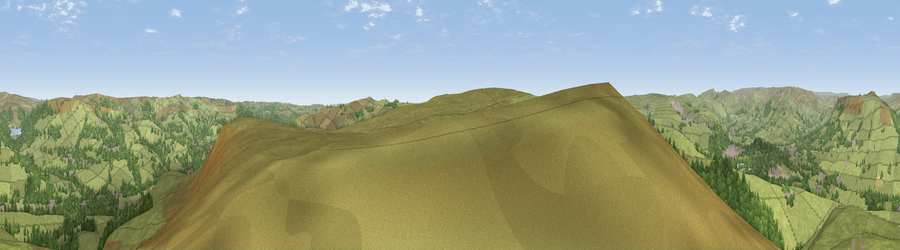

Viewpoint near Abney
#17910 in England · top 28% of its area beats it · near AbneyThe view, rendered

A 360° render of this exact spot computed from the terrain model, tree cover and land cover — summer colours, afternoon light, calibrated against photographs of famous viewpoints. Real trees, hedges and buildings will differ in detail.
The panorama
Grey silhouette: terrain skyline in each direction (720 bearings, Earth curvature and refraction included). Dashed green: skyline with trees (+15 m) and buildings (+8 m) as obstacles. Blue strip: how far the ground is visible on each bearing.
Where the view opens
Wedge length = distance to the farthest visible ground on that bearing (vegetation-aware). Rings at 10, 25 and 50 km.
What fills the view
77% grassland · 21% woodland · 2% built-up
Angular shares of the visible panorama (visual magnitude), not map area. Landscape diversity 0.28 (0–1 Shannon).
Key numbers
More beautiful places nearby
The staircase of upgrades: each row has a higher view potential than everything closer. Driving times are estimates from straight-line distance, calibrated against real road routing — check an actual route before setting out.
| Place | Direction | Drive | Score |
|---|---|---|---|
| Shatton Moor | SSW · 0 km | ~2 min | 58.8 |
| Viewpoint near Eyam | SSE · 4 km | ~9 min | 61.6 |
| Sir William Hill | SSE · 4 km | ~9 min | 68.3 |
| High Neb | NE · 5 km | ~12 min | 69.5 |
| Viewpoint near Hathersage | ENE · 6 km | ~13 min | 70.9 |
| Viewpoint near Thornhill | N · 8 km | ~16 min | 74.1 |
| Viewpoint near Wharncliffe Side | NE · 19 km | ~33 min | 75.2 |
| Wild Bank | NW · 27 km | ~43 min | 76.2 |
53.32714, -1.70906 · source: screening · position refined by local search. Computed location — check access rights before visiting.